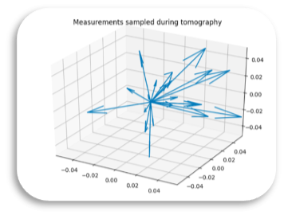

IBMQXState (Python)¶
Functions¶
retry_if_backend_error (exception) → (success) implements exponential backoff by waiting 2^x * 100000 milliseconds between each retry.
Class¶
IBMQXState is class that represents a quantum system being run on IBM’s quantum computer platform. To initialize a ibmqx_state, one provides num_qubits and symbol. Optionally, a list of instances of the Ket class can be passed in as ket_list to represent the initial system state. num_qubits should be an Integer that specifies the size of quantum register required for the coming experiment. The symbol is a String that will be used to identify the quantum register that is provisioned with IBM Q during the execution of experiments using this ibmqx_state. An additional local data structure requirements is maintained within each ibmqx_state which can be used to record information about the backend quantum processor, qubits and gates used by the state during an experiment.
Data¶
The local data for a ibmqx_state object might be the following. An instantiator can optionally provide a pre-initialized instance of the IBM Quantum Experience API wrapper provided by their python library IBMQuantumExperience and/or an api_token that corresponds to the current user’s IBM Q account. A final local variable jobs accumulates results from various circuits that are run using the ibmqx_state.
kets = []
num_qubits = 5
symbol = "q"
requirements = {}
jobs= []
device = 'ibmqx4' # or 'ibmqx2', 'ibmq_16_melbourne', 'ibm_qasm_simulator'
api = None
api_token = None
qasm = 'OPENQASM 2.0;\ninclude "qelib1.inc";\nqreg q[5];\ncreg c[5];'
Methods¶
ibmqx_state._test_api_auth_token (self) → (credential) authenticates with the IBM Quantum Experience Platform using the library IBMQuantumExperience if self.api_token is valid.
ibmqx_state._connect (self) → () attempts to connect to the Quantum Experience Platform. Calls ibmqx_state._test_api_auth_token and then sets self.api to the authenticated api wrapper instance provided by IBMQuantumExperience.
ibmqx_state.x (self, qubit) → (self) prepares to perform a Pauli X gate on the target qubit by adding the QASM for the corresponding operation and qubit to self.qasm. ibmqx_state.x prints the qasm after the operation. Changes to experiment requirements are registered after each use.
Example QASM
x q[0];
ibmqx_state.cx (self, source, target) → (self) prepares to perform a Controlled X gate on the target qubit with the source qubit as controller by adding the QASM for the corresponding operation and qubit to self.qasm. Changes to experiment requirements are registered after each use.
Example QASM
cx q[0], q[1];
ibmqx_state.y (self, qubit) → (self) prepares to perform a Pauli Y gate on the target qubit by adding the QASM for the corresponding operation and qubit to self.qasm. ibmqx_state.y prints the qasm after the operation. Changes to experiment requirements are registered after each use.
Example QASM
y q[0];
ibmqx_state.z (self, qubit) → (self) prepares to perform a Pauli Z gate on the target qubit by adding the QASM for the corresponding operation and qubit to self.qasm. ibmqx_state.z prints the qasm after the operation. Changes to experiment requirements are registered after each use.
Example QASM
z q[0];
ibmqx_state.s (self, qubit) → (self) prepares to perform an S phase shift gate on the target qubit by adding the QASM for the corresponding operation and qubit to self.qasm. ibmqx_state.s prints the qasm after the operation. Changes to experiment requirements are registered after each use.
Example QASM
s q[0];
ibmqx_state.sdg (self, qubit) → (self) prepares to perform an S \(\dagger\) phase shift gate on the target qubit by adding the QASM for the corresponding operation and qubit to self.qasm. ibmqx_state.s prints the qasm after the operation. Changes to experiment requirements are registered after each use.
Example QASM
sdq q[0];
ibmqx_state.h (self, qubit) → (self) prepares to perform a Hadamard gate on the target qubit by adding the QASM for the corresponding operation and qubit to self.qasm. ibmqx_state.h prints the qasm after the operation. Changes to experiment requirements are registered after each use.
Example QASM
h q[0];
ibmqx_state.u1 (self, lamb, qubit) → (self) prepares to perform a single-parameter single-qubit phase gate with zero duration on the target qubit by adding the QASM for the corresponding operation, parameter and qubit to self.qasm. ibmqx_state.u1 prints the qasm after the operation. Changes to experiment requirements are registered after each use. The single-parameter phase gate has the following form:
Example QASM
u1(0.1) q[0];
ibmqx_state.u3 (self, theta, phi, lamb, qubit) → (self) prepares to perform a three-parameter single-qubit phase gate with zero duration on the target qubit by adding the QASM for the corresponding operation, parameter and qubit to self.qasm. ibmqx_state.u1 prints the qasm after the operation. Changes to experiment requirements are registered after each use. The single-parameter phase gate has the following form:
Example QASM
u3(0.1, 0.2, 0.1) q[0];
ibmqx_state.barrier (self, qubit) → (self) prepares to apply a barrier to the circuit to disable circuit optimization. If no qubit param is provided, applies as barrier across the entire quantum register. Changes to experiment requirements are registered after each use.
Example QASM
barrier q;
ibmqx_state.m (self, qubit) → (self) prepares to measure the target qubit in the computational basis by adding QASM specifying that the target qubit should be measured into the matching classical register location. Changes to experiment requirements are registered after each use.
Example QASM
measure q[0] -> c[0];
ibmqx_state.tomography (self, qubit, phases, shots, continue_from) → (results) replicates the current state’s QASM circuit and performs measurements in each of the three orthogonal axes of the Bloch sphere to determine the qubit’s state. Performs the full tomography approach defined in section three of reference [1]. phases gives the number of equally spaced relative phases to sample with respect to each of the three orthogonal axes. Each phase measurement circuit is run a number of times equal to shots. continue_from allows for long-running tomography experiemnts to be resumed. This parameter specifies where to continue the tomography algorithm from in the case that it has been split up over time. Calls self._analyze_tomographic_results to immediately reconstruct the state if the backend is IBM’s simulator “ibm_qasm_simulator” and the data is therefore immediately available.
Three different IBMQXState instances are created per relative phase, one for each orthogonal axis. these are \(ibmqx\_state_x\), \(ibmqx\_state_y\) and \(ibmqx\_state_z\). The jth phase to sample at each axis is calculated by:
Each such phase is applied on each state by calling \(state.u1 \; \forall \; state \in\) \(\{ibmqx\_state_x,ibmqx\_state_y, ibmqx\_state_z\}\). Then the appropriate transformation is applied to each state to rotate the correct axis into the measureable dimension. The transformations for each axis are the following:
| X-Axis | Y-Axis | Z-Axis |
|---|---|---|
| M H | M H S\(\dagger\) | M |
Example QASM
# Excerpt from Code for Tomography on Qubit 4
# PI phase on X-Axis
IBMQX QASM:
OPENQASM 2.0;
include "qelib1.inc";
qreg q[5];
creg c[5];
h q[2];
cx q[2], q[1];
cx q[1], q[0];
x q[3];
cx q[3], q[2];
h q[3];
h q[1];
u1(0.3141592653589793) q[4];
h q[4];
measure q[0] -> c[0];
# PI phase on Y-Axis
IBMQX QASM:
OPENQASM 2.0;
include "qelib1.inc";
qreg q[5];
creg c[5];
h q[2];
cx q[2], q[1];
cx q[1], q[0];
x q[3];
cx q[3], q[2];
h q[3];
h q[1];
u1(0.3141592653589793) q[4];
sdg q[4];
h q[4];
measure q[0] -> c[0];
# PI phase on Z-Axis
IBMQX QASM:
OPENQASM 2.0;
include "qelib1.inc";
qreg q[5];
creg c[5];
h q[2];
cx q[2], q[1];
cx q[1], q[0];
x q[3];
cx q[3], q[2];
h q[3];
h q[1];
u1(0.3141592653589793) q[4];
measure q[0] -> c[0];
ibmqx_state._analyze_tomographic_results (qubit, exp_vector, results) → (bloch_vectors) reconstructs the Bloch vector of a single-qubit state from a set of tomographic results from the IBM Quantum Experience API. exp_vector is expected to be a list of the subscripts \(j \; \forall \; phase_j\) that would have been used by self.tomography. results is expected to be dictionary of circuits’ probabilistic measurement result distributions provided from the IBM Quantum Experience API during tomography. The Bloch vector is reconstructed by first summing the probabilities of each bitstring result where the qubit in question has a value of 1 to get \(p_{one}\). Next, we also sum the probabilities of each bitstring result where the qubit in question has a value of 0 to get \(p_{zero}\). Probabilities \(p_{one}\) and \(p_{zero}\) are collected for each component of the Bloch vector [X, Y, Z] and for each entry in exp_vector using the appropriate circuit results for each \(i \in \{0, 1, 2\}, j \in exp\_vector\). Each component of a Bloch vector is calculated by \(p_{zero} - p_{one}\). This assumes that the results are left in the same order that their circuits were submitted, so that the correct index of a result can be calculated by \(3j + i\).
The result bloch_vectors gives the set of vectors that were “observed” during the tomography process.
In order to reconstruct the quantum state of the qubit, one can simply sum the observed Bloch vectors.
# sum all observed vectors
x, y, z = zip(*bloch_vectors)
x = functools.reduce(lambda pre, curr: pre + curr, x)
y = functools.reduce(lambda pre, curr: pre + curr, y)
z = functools.reduce(lambda pre, curr: pre + curr, z)
ibmqx_state.post_analyze_tomographic_results (qubit, exp_vector, results) → (bloch_vectors) reconstructs the Bloch vector of a single-qubit state from a set of tomographic results from the IBM Quantum Jobs API. exp_vector is expected to be a list of the subscripts \(j \; \forall \; phase_j\) that would have been used by self.tomography. results is expected to be dictionary of circuits’ tallied measurement outcome results provided from the Jobs API. The Bloch vector is reconstructed by first counting the number of occurrences of each bitstring result where the qubit in question has a value of 1 to get \(n_{one}\). Next, we also counting the number of occurrences of each bitstring result where the qubit in question has a value of 0 to get \(n_{zero}\). \(n_{one}\) and \(n_{zero}\) are collected for each component of the Bloch vector [X, Y, Z] and for each entry in exp_vector using the appropriate circuit results for each \(i \in \{0, 1, 2\}, j \in exp\_vector\). Each component of a Bloch vector is calculated by \(n_{zero}/(n_{zero}+n_{one}) - n_{one}/(n_{zero}+n_{one})\). This assumes that the results are left in the same order that their circuits were submitted, so that the correct index of a result can be calculated by \(3j + i\). The result bloch_vectors gives the set of vectors that were “observed” during the tomography process. In order to reconstruct the quantum state of the qubit, one can simply sum the observed Bloch vectors.
ibmqx_state.register_requirements (self) → () checks if the current state of the quantum system is the most expensive yet seen during the experiment’s runtime. If it is the most expensive state, updates the resource requirements. Requirements include but are not limited to:
- qubits
- gates
- processor
ibmqx_state.print_requirements (self) → () prints the requirements for maintaining the current state of the quantum system, and the current calibration details for the configured backend.
Example QASM
{
"qubits": 14,
"gates": 1,
"processor": "ibmq_16_melbourne"
}
{
"lastUpdateDate": "2019-06-09T06:33:12.000Z",
"fridgeParameters": {
"cooldownDate": "2018-07-10",
"Temperature": {
"date": "2019-06-09T08:39:05Z",
"value": "None",
"unit": "K"
}
},
"qubits": [
{
"name": "Q0",
"buffer": {
"date": "2019-06-09T06:13:34Z",
"value": 10,
"unit": "ns"
},
"gateTime": {
"date": "2019-06-09T06:13:34Z",
"value": 100,
"unit": "ns"
},
"T2": {
"date": "2019-06-09T06:33:12Z",
"value": 21.8,
"unit": "µs"
},
"T1": {
"date": "2019-06-09T06:32:00Z",
"value": 48,
"unit": "µs"
},
"frequency": {
"date": "2019-06-09T06:13:34Z",
"units": "GHz",
"value": 5.1002374
}
},
...
],
"backend": "ibmq_16_melbourne"
}
ibmqx_state.print_max_requirements (self) → () prints the requirements for maintaining the most expensive state of the quantum system seen during the experiment.
ibmqx_state.print (self) → () prints self.qasm.
Exceptions¶
BackendException is an exception that is raised when an error is returned from a remote system.
References¶
- Shukla, Abhishek, et al. “Complete Characterization of the Directly Implementable Quantum Gates Used in the IBM Quantum Processors.” 2018.